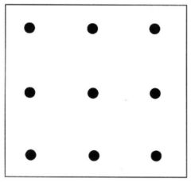

This Week's Brain Teaser
(Difficulty: Medium)

Connect the dots using 4 straight lines without lifting up your pencil.
Connect the dots using 4 straight lines without lifting up your pencil.
Can you design an apparatus for dropping a paper cup with two ping pong balls inside (astronauts) from as high a height as possible without them popping out?
In the first challenge you can use a trash bag, but in the second challenge you'll need to figure out how to do without...